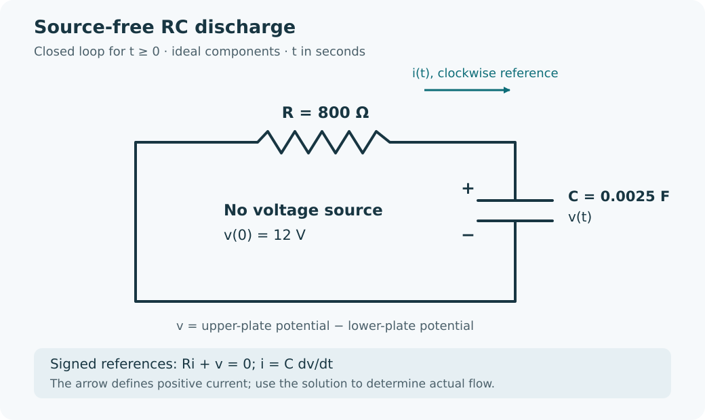

Course practice / Batch 11 / 2026-10-11 PDT
MTH 256
一阶微分方程
First-order differential equations · 阶数与线性、初值及解验证、方向场、分离变量、积分因子、牛顿冷却、指数与逻辑斯蒂增长、变体积混合及无源 RC 放电
Even the initial slope can agree for a wrong candidate
Consider \(y^{\prime}=-2ty^2\), y(0) = 1, and the candidates \(u(t)=1/(1+t^2)\) and \(w(t)=1/(1+2t^2)\). Both t and y are dimensionless; consider real t.
- Identify the independent variable, dependent variable, and order. Is the equation linear in y?
- Differentiate both candidates and substitute each into the differential equation. Which satisfies it for every real t?
- Check the initial value and initial slope for both candidates. Which solves the IVP? Explain why agreeing with the initial value and initial slope is still not enough to verify a solution on an interval.
中文提示（不含解答）
初值、初始斜率和整个区间上的方程检验要分开进行；在一个点吻合，不等于在所有时刻都吻合。
The direction changes at a vertical column
For \(y^{\prime}=-t/(1+y^2)\), both t and y are dimensionless. Put t on the horizontal axis and y on the vertical axis.
- Calculate the slopes at all nine points with \(t\in\{-1,0,1\}\) and \(y\in\{-1,0,1\}\), then sketch a short segment at each point. Explain why the rows y = −1 and y = 1 match.
- Locate all horizontal slope segments. Does their location represent a constant equilibrium solution? Check whether any constant y can solve the equation on a nonempty open time interval.
- A solution with y(0) = 2 is defined on both sides of t = 0. Use slope signs to decide whether t = 0 is a local maximum, a local minimum, or neither. Does a horizontal tangent at that time mean the solution remains constant? Do not solve the equation.
中文提示（不含解答）
分母始终为正，所以斜率的正负由时间决定；一整列水平线段与一条恒定高度的平衡解不是同一回事。
Choose the branch above an excluded level
Solve \(y^{\prime}=(t+1)/(y+2)\), y(0) = 1, for \(t\ge0\). Both variables are dimensionless. The equation is defined only where \(y\ne-2\), and a square root denotes the nonnegative real root.
- Separate variables, integrate, and use the initial condition to choose an explicit branch.
- Verify the equation and initial value. Find y(1), exactly and to three decimals, and explain why this branch never reaches the excluded level on t ≥ 0.
- Find the first time y = 3, exactly and to three decimals. Use the derivative sign to justify that there is only one such time on t ≥ 0.
中文提示（不含解答）
把 y + 2 整体作为积分中的变量会更简洁；取平方根时，应由初值决定符号，不能同时保留两条分支。
A rational response returns to its starting height
For \(t\ge0\), solve \(y^{\prime}+[2t/(1+t^2)]y=4/(1+t^2)\), y(0) = 1. Both variables are dimensionless.
- Find an integrating factor, write the product-derivative equation, and solve the IVP.
- Verify the equation and initial condition. Find y(1) and the initial slope exactly.
- Find the first positive time at which y returns to 1, and find its slope then. Compare that slope with the initial slope, and find the long-term limit.
中文提示（不含解答）
积分因子的指数中可以出现对数；寻找“再次回到初值”的时刻时，要排除最初的 t = 0。
A temporary input carries the response above its final level
Solve \(y^{\prime}+y=2+2e^{-t}\), y(0) = 0, for \(t\ge0\). Both t and y are dimensionless.
- Use an integrating factor to solve the IVP, then verify the equation and initial value.
- Find the initial slope and the first time y = 2. Is the response rising or falling when it passes that value?
- Find the time and value of the greatest response, with the value exact and to three decimals. Use derivative signs to justify the maximum. Find the long-term limit and state whether the solution approaches it from above or below for sufficiently large t.
中文提示（不含解答）
乘上积分因子后，右边的一个指数项会变成常数；达到最终极限对应的高度，并不代表此后就停止变化。
A temperature half-life refers to excess above the room
A sample starts at 86 °C in a room held at 22 °C. After 6 min its temperature is 54 °C. Assume \(T^{\prime}=-k(T-22)\), with constant k > 0 in min\(^{-1}\), T in °C, and t in minutes. Use this model for \(t\ge0\).
- Solve for T(t) and determine k, exactly and to four decimals with units. Verify both temperature readings.
- Find the first time T = 38 °C. Compare the elapsed times for the drops 86 → 54 °C and 54 → 38 °C, using the temperature excess above the room.
- Find the first time the Celsius reading is half its initial reading, T = 43 °C, exactly and to two decimals. Explain why this time differs from the half-life of the temperature excess. Find the limiting temperature.
中文提示（不含解答）
牛顿冷却中按相同比例衰减的是“样品温度减去室温”；摄氏温度读数本身通常不具有同一个减半时间。
A halfway time does not give a halfway population
A continuously modeled culture grows according to \(P^{\prime}=rP\), where r > 0 is constant. It has 180 organisms initially and 540 organisms after 6 hours. Assume no removals or carrying-capacity limit. Use t in hours and this model for \(t\ge0\).
- Determine r exactly with units and solve for P(t). Verify both counts.
- Find P(3), exactly and to two decimals. Compare it with the arithmetic midpoint of the two observed counts. Why is linear interpolation between the observations not exact under this model?
- Find the first time P = 1080, exactly and to three decimals in hours. Compare the average growth rate over the first 6 hours with the instantaneous growth rate at t = 6, to two decimals with units.
中文提示（不含解答）
指数增长在相等时间内乘上相同的倍数，而不是增加相同的数量；平均增长率用总增量除以时间，瞬时增长率用微分方程计算。
Halving the unused capacity need not take a fixed time
A culture follows \(N^{\prime}=0.12N(1-N/840)\), N(0) = 280 organisms. Time t is in days, 0.12 has units day\(^{-1}\), and the carrying capacity is 840 organisms. Treat N as continuous and use the model for \(t\ge0\). Define the unused capacity as \(D(t)=840-N(t)\), in organisms.
- Find the nonnegative equilibrium populations and use slope signs to classify them. Solve the IVP by separation.
- Find the first times at which D = 280 and D = 140, exactly and to two decimals in days. Compare the elapsed times for the two successive gap halvings, 560 → 280 and 280 → 140.
- Calculate the total growth rates when N = 560 and N = 700, with units. Find the long-term population limit and explain from your solution whether the unused capacity can become exactly zero at a finite time.
中文提示（不含解答）
先把“剩余容量”的目标转换成实际种群数量；第二次减半的持续时间要用两个到达时刻相减。
More salt can coexist with a lower concentration
A tank can hold 80 L and initially contains 40 L of liquid with 2.0 kg of dissolved salt. Brine containing 0.030 kg/L enters at 4 L/min, and perfectly mixed liquid leaves at 2 L/min. Stop the model when the tank first reaches capacity; do not model overflow. Assume constant rates, perfect mixing, no evaporation, and no other losses. Let S(t) be salt mass in kg and \(C(t)=S(t)/V(t)\) concentration in kg/L, with t in minutes.
- Find V(t), the stopping time, and the model's physical time interval. Set up the IVP for S(t), including the salt-entry rate.
- Solve for S(t) and C(t). Find the first time C = 0.040 kg/L, exactly and to three decimals in minutes, and check that it occurs before the tank is full.
- Find the final salt mass and concentration. Calculate the total salt admitted and removed before the tank is full, and check the mass balance. Explain how the final salt mass can exceed its initial value while the concentration is lower.
中文提示（不含解答）
流入量比流出量大，体积会增加；出盐速率应使用随时间变化的体积。浓度是盐量除以体积，两者不能混为一谈。
A source-free discharge with a signed current
At t = 0 a precharged capacitor is connected across one resistor. The diagram shows the closed discharge loop for t ≥ 0, with R = 800 Ω and C = 0.0025 F. There is no voltage source. Capacitor voltage v(t), in volts, is the upper-plate potential minus the lower-plate potential, with v(0) = 12 V. Current i(t), in amperes, is defined positive clockwise, into the upper plate. Thus the signed loop equation is \(Ri+v=0\). Use t in seconds, ideal components, and no other branches.
- Write and solve the IVP for v(t), and find the time constant. Verify the differential equation and initial voltage.
- Find i(t), its initial value in mA, and its long-term limit. State the actual current direction and explain how it relates to the clockwise reference arrow in the diagram.
- Find the first time v = 3 V, exactly and to three decimals. Calculate the signed charge delivered into the upper plate from t = 0 to that time, and the positive amount of charge removed from that plate, both in coulombs. Check against the initial and final upper-plate charges \(Q_C=Cv\).

中文提示（不含解答）
电流箭头定义正方向，不一定表示实际流动方向；先保留电流的符号，最后再区分“流入的净电荷”和“移出的正电荷量”。